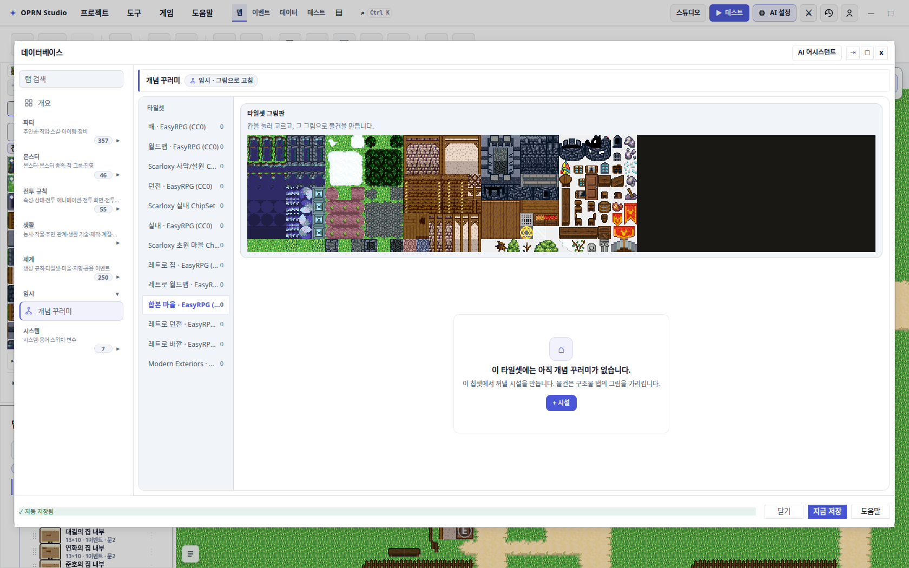
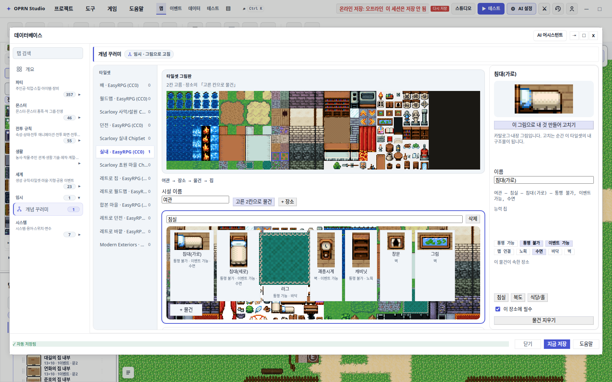
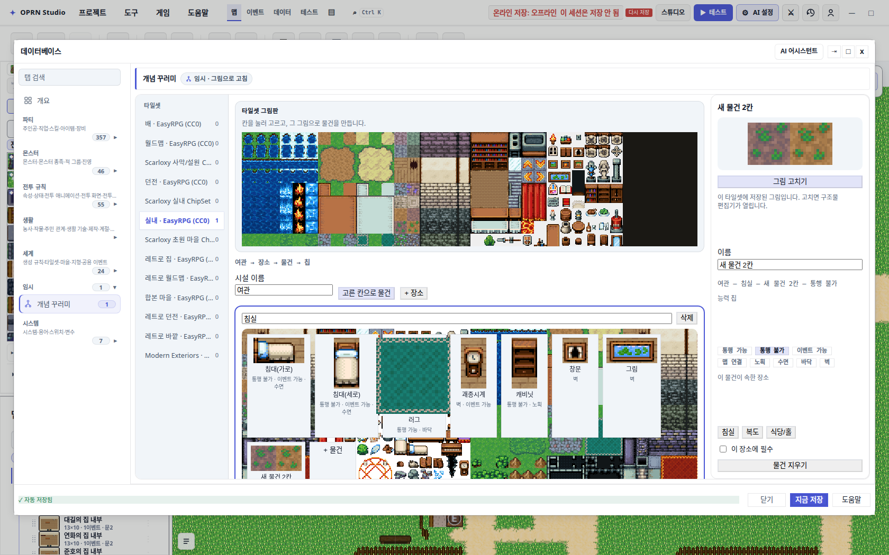
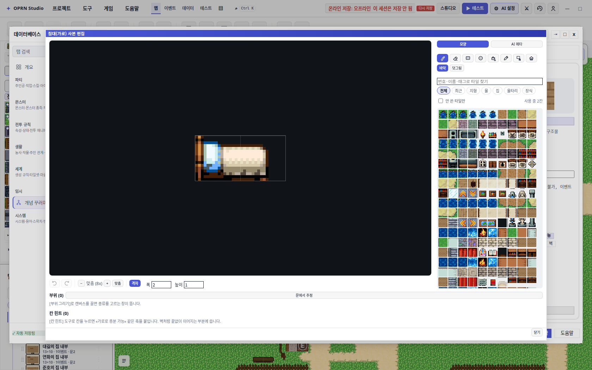
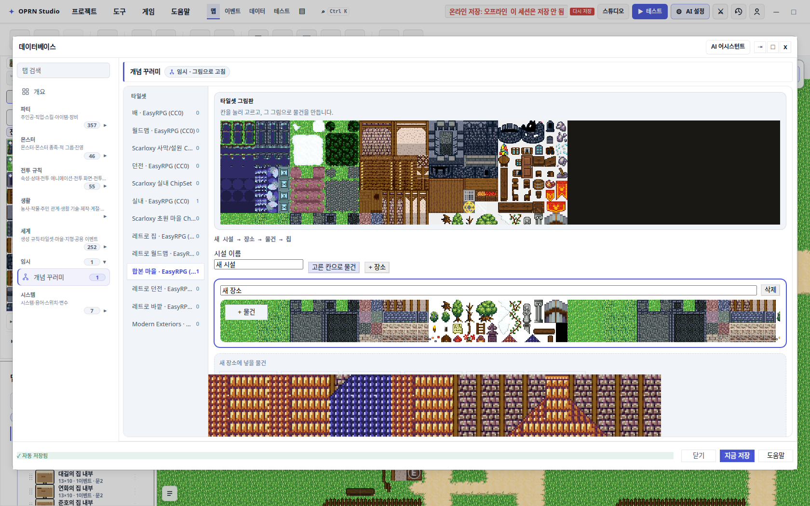
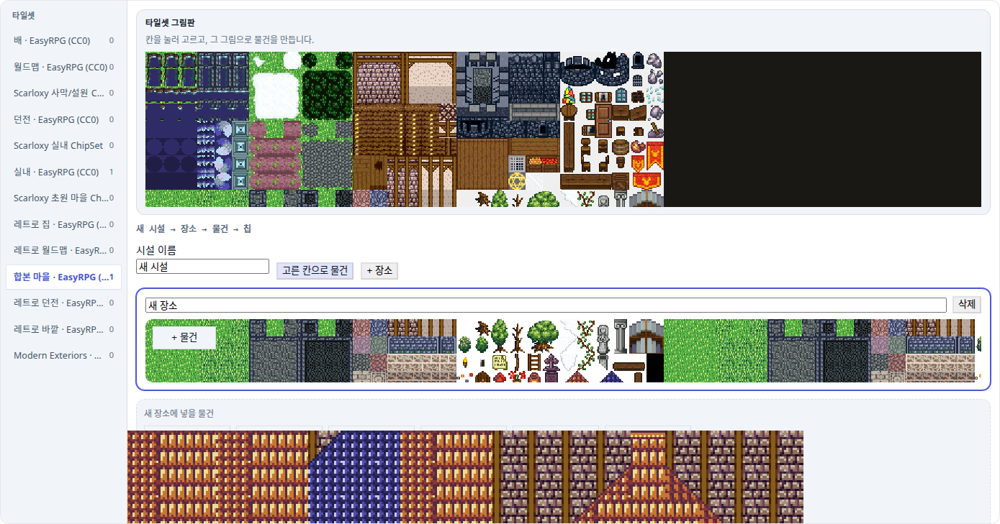

나무와 그림판이 한 화면이다
개념 꾸러미는 시설→장소→물건 나무였다. 그림은 다른 탭에 있었다. 이제는 칩셋 그림판과 장소 무대가 같은 자리에서 만난다. 카탈로그·내장 집은 피커 시드일 뿐이고, 고치는 순간 타일셋 킷으로 구워진다. 모든 화면은 이 리포의 실제 에디터 스크린샷이다.
칩셋 그림판이 물건의 입구다
통행·오토타일·미분류는 세계에 남겼다. 칩셋 PNG 픽셀도 여기서 안 고친다. 이 탭이 하는 일은 하나다 — 이 칩셋에서 꺼낼 시설을 그림으로 고른다.

learnedFrom === "db-authored" 한 줄이다.
conceptStudioModel.ts · isOwnedPicture
여관 침실이 바닥 위에 놓인다
실내 칩셋을 고르면 여관 초안이 시드된다. 장소 카드는 글자 목록이 아니라 바닥 타일 위 썸네일 무대다. 침실 바닥은 실내 마룻바닥이 반복된다.


bed_h 는 카탈로그 시드다. 단추 문구가 「내 것 만들어 고치기」인 이유가 여기 있다.
오른쪽: 그림판 칸을 누르면 파란 테두리가 붙고, 도구 줄에
고른 칸으로 물건이 켜진다.
고른 칸이 한 줄 물건이 된다
새 칩 종류를 만들지 않는다. 고른 타일 id 가 한 줄 section 킷이 되고,
그 id 를 물건이 가리킨다. 바닥 스냅은 ai.snap: "floor".

db-authored 킷이라 한 번 더 굽지 않는다.
빈 칸 목록은 거절한다.
// stampKitFromTiles([222, 223], "새 물건 2칸", id) { kind: "section", width: 2, height: 1, learnedFrom: "db-authored", rows: [{ tiles: [222, 223] }], ai: { snap: "floor" } }
카탈로그를 고치면 사본이 생긴다
「이 그림으로 내 것 만들어 고치기」는 구조물 탭과 같은
duplicateIntoTileset 을 탄다. 물건의 objectId 는
bed_h 에서 kit_… 로 옮겨진다. 원본 카탈로그는 그대로다.

빈 피커가 아니라 집 그림으로 시작한다
마을 칩셋에는 여관 가구가 없다. 예전에는 「+ 물건」이 빈 목록이었다.
지금은 내장 집(kit_house_*)이 피커 시드로 나온다.
고르기 전에는 시드, 고치면 역시 타일셋으로 굽는다.


structureKits 로 들어간다.
화면이 약속하는 것
| 불변식 | 어떻게 확인하나 |
|---|---|
| 마을 피커에 내장 집이 있다 | conceptObjectsForTileset 가 kit_house_* 를 반환 |
| 실내 피커에 여관 가구가 있다 | 스탬프가 있어도 bed_h 가 남는다 |
| 빈 칸으로는 물건을 못 만든다 | stampKitFromTiles([]) throw |
| 카탈로그는 아직 내 그림이 아니다 | isOwnedPicture(tileset, "bed_h") === false |
그림 고치기는 id 를 kit_ 로 옮긴다 | claimThingPicture 후 thing.objectId |
| 시트 스탬프는 즉시 소유 | registerStampOnTileset → db-authored |
| 그림판이 칸 수만큼 버튼을 그린다 | scratch-concept-sheet-tile-N |
| 고른 칸으로 물건이 무대에 생긴다 | UI 테스트 · scratch-concept-thing-from-sheet |
| claim 단추 뒤에 구조물 편집기가 열린다 | 실사 캡처 06 · structure-kit-editor |
모델 7 + 탭 UI 14(이 중 스튜디오 5). 방금 실행 21/21 통과.
캡처는 expert 모드 · ?freshProject=1 ·
Vite 127.0.0.1:9867 에서 scripts/qa/concept-studio-shots.mjs 가 찍었다.
이번에 안 한 것
| 한계 | 왜 지금은 이런가 | 다음 |
|---|---|---|
| 시공 파이프가 안 읽는다 | 나무는 실험 면이다. 생성기가 이 필드를 믿게 하면 빈 시드와 사용자 삭제를 구분해야 한다 | 명시적 연결 설계 |
| 칩셋 PNG 픽셀 편집 없음 | 기존 「그림 고르기」가 칸을 고른다. 새 페인트 면을 열지 않았다 | 필요하면 구조물 편집기 |
| 새 칩 종류 없음 | 닫힌 집합 pass / block / event / transfer / loot / sleep / floor / wall |
칩을 늘리려면 세계와 같이 |
| 통행·오토타일·미분류는 여기 없음 | 세계 탭 소유. 이 탭으로 옮기지 않는다 | 그대로 |
| 마을에 여관 초안 없음 | 실내 칩셋만 SCRATCH_INN_BUNDLE 을 시드한다 |
마을용 시설 초안은 별도 |